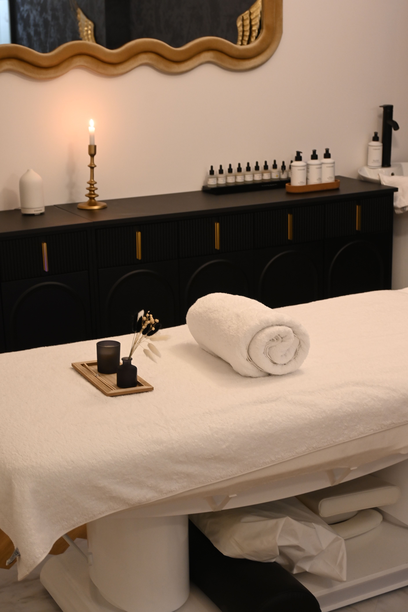
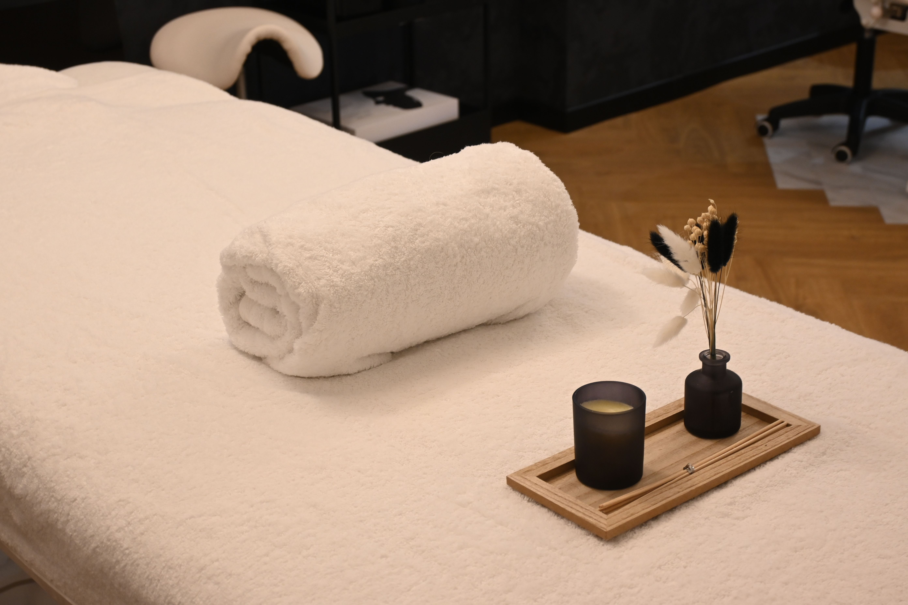

ひとりの時間を、ゆっくりと。
完全予約制のプライベートな空間。周りを気にせず、ご自身のペースでお過ごしいただけます。
OSAKA, HONMACHI — PRIVATE SALON
予定を詰めこむ毎日に、
なにもしない余白を。
ここは、あなたに戻るための小さなサロン。
完全予約制・お一人ずつのご案内

01 OUR PHILOSOPHY
ことのはが大切にしていること誰かのために動く時間が多いほど、
自分のことは、つい後回しになるもの。
やわらかな灯り。穏やかな香り。静かな時間。
ことのはは、心地よく過ごすための
小さな余白を大切にしています。
その日の気分も、苦手なことも。
気負わずお聞かせください。

Less noise.
More you.
完全予約制のプライベートな空間。周りを気にせず、ご自身のペースでお過ごしいただけます。
初回はご希望や苦手なことを伺い、当日の内容をご案内します。力加減も遠慮なくお伝えください。
無理な継続のご案内はしません。日常の中でひと息つきたくなったときに、お立ち寄りください。
03 FIRST VISIT
ご来店からお帰りまで、約60分。
一つひとつ、ご案内しながら進めます。
15 MIN
気になることや、その日のご希望を伺います。
10 MIN
当日の流れと力加減などを一緒に確認します。
25 MIN
ご希望をもとにボディリラクゼーションを行います。
10 MIN
お支度とお会計。次回のご相談はご希望の方のみ。
BEFORE YOUR VISIT
動きやすい服装でお越しください。お着替えのご希望は、ご予約時にお知らせいただく想定です。
苦手なことやご希望の力加減を、初めに伺います。途中でも遠慮なくお伝えいただく想定です。
完全予約制です。このページは自主制作のデモのため、実際のご予約は受け付けていません。
MAKE TIME FOR YOURSELF
初回60分 3,980円（税込）
ご希望の日程から、ご相談ください。
04 SALON INFORMATION
PRIVATE RELAXATION SALON
大阪・本町の小さなプライベートサロンを
想定したコンセプトデザイン。